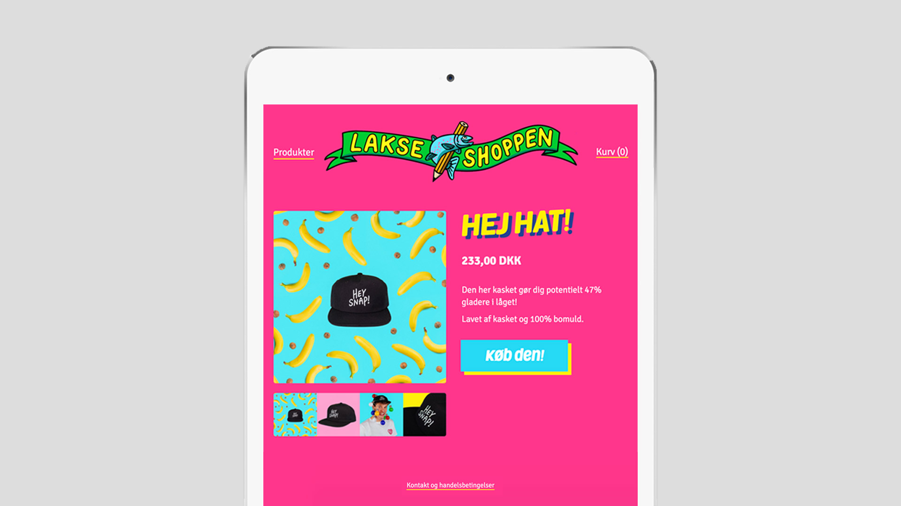
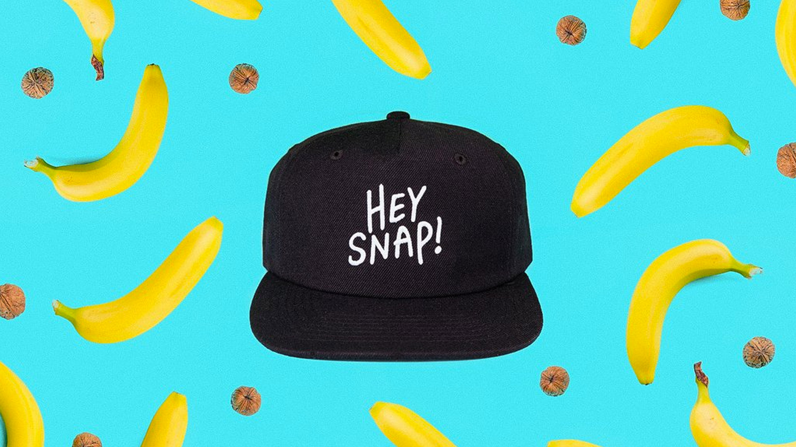
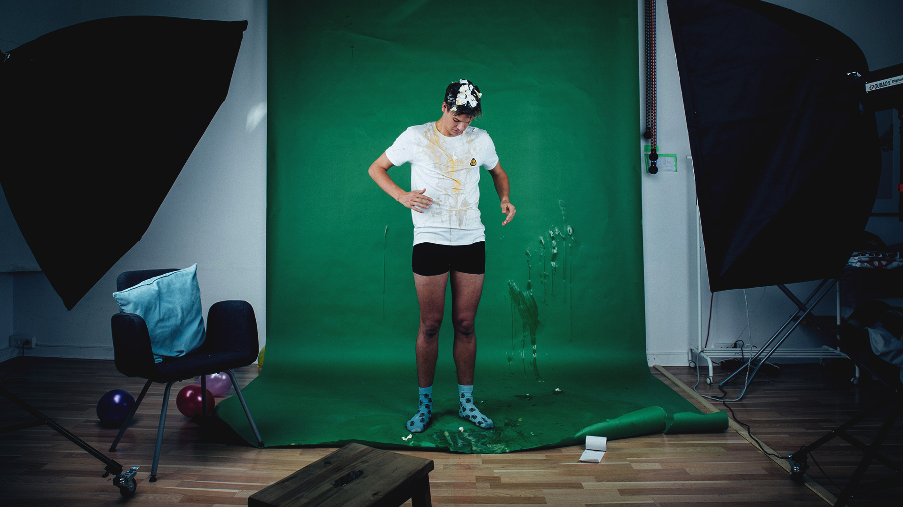

Taking a genre shift in visual style and mood of what I had done before, made me have a more ethnographic approach to align with Rasmus' style. His style is a language of emojies, colorful clothes, great smile, and a lot of story telling through acting, games, drawings, and character play.
Conceptual photography for Lakserytteren.dk
Year: Fall 2016
Work-work: Conceptual photography
My role: Photography, planning, brainstorming
Lakserytteren.dk is an online web shop selling clothing and merchandise designed by the danish influencer, Rasmus Kolbe. He is also known as the King of Snapchat in Denmark. In collaboration with Rasmus I created a tone that reflects the color-, playful and messy style of his work and products. This came to be expressed through eye-catching photos. These pictures worked both as pictures for the web shop as well as content for his social media-profiles to cross promote his webshop.

Challenge

Process
Rasmus' provided a living mood board, which got edited and changed as we moved a long in the process of building the web shop. I was in charge of getting hold on a studio with a full setup as well as shopping props to spice up the shoot. I aligned the props with the mood board: stickers, banans, ballons, peperoni pizzas, avocado, donuts, dinosaurs, cereal, etc! And eggs – lots of eggs.
